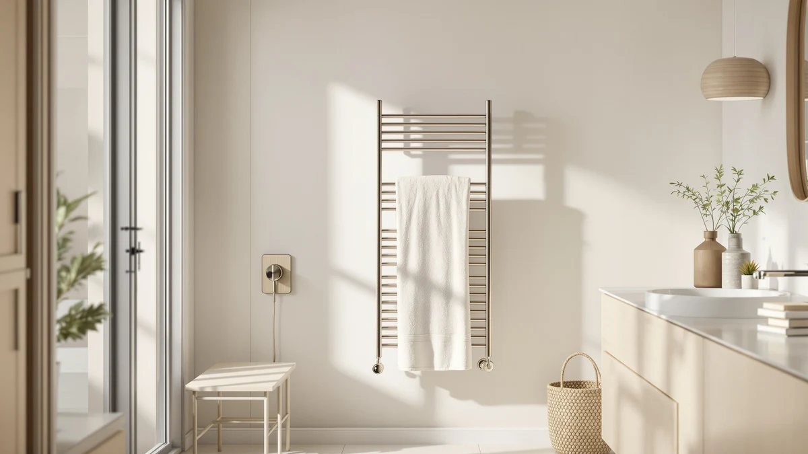

The Best Hardwired Heated Towel Racks (2026)
Prices and picks verified as of August 2026. Independent, reader-supported reviews.


Quick Answer
For most bathrooms, the ENZE Smart Rotating Heated Towel Rack is the best of the hardwired heated towel racks we compared, thanks to its rotating bars, built-in shelf, and stainless steel build. If your wall is too narrow for a wide rack, the Paraheeter below is a close runner-up.
Our pick: ENZE Smart Rotating Heated Towel — $189.99 Check Price on Amazon
Bottom line: our top pick is the ENZE Smart Rotating Heated Towel Rack for Bathroom at $189.99. The best budget option is the Fingertip WD Toddler Towels with Hood at $11.99.
Things to Know Before You Buy
- Hardwired means a real electrical hookup. Unlike plug-in models, a hardwired heated towel rack wires directly into a dedicated circuit behind the wall, which usually means an electrician for the initial install but no cord near the water afterward.
- Bar count and layout decide capacity. A rack with more bars, or a rotating design like our top pick, dries more towels at once than a slim vertical model built for a tight wall.
- Timers and WiFi controls change daily use. A built-in timer shuts the rack off automatically, and a WiFi-connected model lets you schedule heat before you're even out of bed.
- Stainless steel is the standard finish. Every rack in this guide uses a stainless steel frame, which holds up to the humidity and splashes that come with bathroom mounting.
- Installation is worth planning for. Read our install guide before you buy, so you know what wiring and wall space a hardwired rack actually needs.
The best hardwired heated towel racks solve a problem plug-in warmers can't: a permanent, cord-free fixture that heats towels straight through and dries them between uses without a cable running across the bathroom floor. Wiring a rack into its own circuit takes more upfront work than plugging one in, but it rewards you with a cleaner install and steadier heat. We compared seven racks across price, bar layout, and control type to see which ones earn that extra effort.
That upfront work looks different depending on the rack. A wall-mounted bar design with a built-in shelf, like our top pick, needs enough clear wall space and a run back to a dedicated circuit, while a slim vertical model fits a narrow gap next to a shower or vanity. Bar count matters too: more bars mean more towels drying at once, and a rotating design keeps warmth even across the whole rack instead of concentrating it near the wall.
After weighing installation, bar layout, and controls across all seven, the ENZE Smart Rotating Heated Towel Rack is our pick for the best hardwired heated towel racks overall, with rotating bars and a built-in shelf that cover the most bathrooms for the price. If a narrower vertical profile suits your wall better, the Paraheeter is a strong runner-up, and the AAOBOSI below is the one to buy if budget matters most.
Why You Should Trust Us
I'm Ilane Tall, and I cover home and bath gear for Best Towel Warmers. Ranking the best hardwired heated towel racks means reading past the marketing copy on each listing and comparing what a rack actually offers, bar count, control type, mounting footprint, and price, against every other rack in this guide rather than against an ideal that doesn't exist.
A hardwired rack is a bigger commitment than a bucket warmer or a cord you can unplug, so I weigh the practical regrets heavily: a rack too narrow for real towels, a timer that's fussy to set, or a price that buys less capacity than a cheaper option two spots down.
How We Picked
We started by looking at what separates the best hardwired heated towel racks from a basic plug-in warmer: a permanent mounting design, enough bars to matter, and controls that don't need a manual every time you use them. Racks with a rotating bar layout or a built-in shelf scored higher, since those features add capacity or convenience without adding bulk.
From there we weighed price against what each rack delivers. A smart WiFi rack earns its premium if remote scheduling is worth it to you, a timer-equipped model earns its keep by shutting off on its own, and a professional-grade unit like the ForPro makes more sense for heavy daily use than for a single family bathroom. We ranked accordingly rather than assuming more features always means a better fit.
How We Compared
We built this list from each rack's published specifications, dimensions, and materials rather than a staged lab with invented numeric scores. We compare bar layout, footprint, and control type the way a buyer actually shops: what fits the wall, what it costs to run, and what you give up at a lower price.
We don't assign point scores or star ratings we made up ourselves. Where we cite a size, price, or feature, it comes directly from the listing shown on this page, and where we flag a drawback, it reflects a real trade-off in the design rather than a manufactured complaint.
Our Picks

ENZE Smart Rotating Heated Towel
What we like
- Rotating bar design spreads heat evenly across every towel, including the ones farthest from the wall
- Built-in shelf adds a spot for a folded towel or robe
- 17.7 by 26.8 inch footprint with shelf fits most standard bathroom walls
- Stainless steel construction holds up to daily bathroom humidity
Flaws but not dealbreakers
- At $189.99 it costs more than the vertical and budget racks here
- The rotating mechanism adds a moving part a simple fixed-bar rack doesn't have
- The shelf design needs a bit more wall depth than a slim vertical model
| Material | Stainless steel |
| Size | 17.7" x 26.8" (With Shelf) |
The ENZE earns the top spot because its rotating bars solve the problem that limits most fixed-bar racks: uneven heat. Instead of concentrating warmth on the towels closest to the wall, the rotating design cycles bars through the same heated zone, so a towel hung on the outer edge ends up as warm as one at the center. That matters if you're warming towels for more than one person, since nobody wants to end up with the cool one.
The built-in shelf is the other detail that separates it from a plain bar rack, giving you a place to set a folded towel, a robe, or a stack of washcloths without adding a second fixture to the wall. At 17.7 by 26.8 inches with the shelf included, it asks for a reasonable amount of wall space, and at $189.99 it isn't the cheapest rack in this guide. For most bathrooms trying to settle on one of the best hardwired heated towel racks and not think about it again, the ENZE is the one we'd install.

Paraheeter Towel Warmer Towel Warmer
What we like
- Four-bar vertical layout fits a narrow strip of wall next to a shower or vanity
- 37.5 by 11.9 inch footprint takes up less width than our top pick
- Stainless steel frame matches the finish of most fixtures already in a modern bathroom
- Priced $30 below the ENZE while still holding four towels
Flaws but not dealbreakers
- No shelf, so you lose the extra surface the ENZE offers
- Four bars means less total drying surface than a wider rack
- Vertical mounting still needs a clear run of wall from about knee height up
| Material | Stainless steel |
| Size | 4bars-37.5"(L) x 11.9"(W)-VERTICAL |
The Paraheeter is what we'd recommend to anyone whose bathroom layout rules out a wide rack. Its four bars stack vertically across a footprint of 37.5 by 11.9 inches, so it slots into the strip of wall next to a shower stall or between a vanity and a doorway, spots where the ENZE's wider profile wouldn't fit.
At $159.99 it costs thirty dollars less than our top pick and still gives you four separate bars to spread towels across, though you give up the built-in shelf that comes with the ENZE. If your bathroom has the width to spare, the ENZE's rotating design and extra shelf make it the better all-around choice, but for a tight wall the Paraheeter delivers the core benefit of a hardwired rack, towels that warm and dry between uses, in a footprint that actually fits.

Fingertip WD Toddler Towels with
What we like
- Large 27.5 by 55 inch size, big enough to work as a full bath towel instead of just a hand towel
- Priced at $13.97, far below every heated rack in this guide
- Drapes easily over any of the racks listed above
Flaws but not dealbreakers
- This is a towel, not a heated rack, so it won't warm or dry anything on its own
- Doesn't include any of the timer, WiFi, or mounting features the other picks offer
- Best treated as an accessory purchase rather than a stand-alone pick
| Material | Stainless steel |
| Size | 27.5 inches x 55 inches |
We're including the Fingertip WD with a caveat up front: it's a towel, not a hardwired heated towel rack, and it won't warm or dry anything by itself. We kept it on this list because at $13.97 it's a low-cost way to make sure you actually have a towel worth draping over one of the racks above, and its 27.5 by 55 inch size is large enough to work as a full bath towel rather than a hand towel.
If you're outfitting a bathroom from scratch, buying a rack without a decent towel to hang on it is a common oversight, and this closes that gap cheaply. Just don't confuse it with the heated, hardwired picks elsewhere in this guide. It's a companion purchase, not a substitute for the ENZE, the Paraheeter, or any of the racks below.

AAOBOSI Towel Warmers for Bathroom
What we like
- At $79.99 it costs less than half our top pick
- Stainless steel construction matches the pricier racks in fit and finish
- Straightforward design without a timer or app to configure
Flaws but not dealbreakers
- No rotating bars or built-in shelf like the ENZE
- The listing doesn't specify exact dimensions, so measure your wall space before buying
- Fewer extras than the smart or timer-equipped picks
| Material | Stainless steel |
| Size | Luxury Towel Warmer |
The AAOBOSI is the rack we'd point budget-conscious buyers toward first. At $79.99 it costs less than half what the ENZE runs, and it still uses the same stainless steel construction as every other rack in this guide, so you're not trading away build quality to save money.
What you give up is the extra convenience layer: no rotating bars, no built-in shelf, no timer or app. For a lot of bathrooms that's a fine trade, since the core job of a hardwired heated towel rack, warming and drying a towel between uses, doesn't require any of those extras. Just confirm the fit against your wall before you buy, since the listing doesn't spell out exact dimensions the way our other picks do.

Evokor Towel Warmer with Timer
What we like
- Built-in timer shuts the rack off automatically, so you don't have to remember it yourself
- 35.4 by 18.11 inch footprint offers a wide, roomy drying surface
- Stainless steel build holds up in a humid bathroom
Flaws but not dealbreakers
- At $219.00 it's the most expensive rack in this guide
- The wide footprint needs a fair amount of clear wall
- The timer adds a control to learn compared with a simple always-on rack
| Material | Stainless steel |
| Size | 35.4" × 18.11" |
The Evokor is the pick for anyone who wants the safety and convenience of an automatic shutoff without hunting for a separate smart plug. Its built-in timer means you can turn it on before a shower and trust it to power down on its own, which matters more with a hardwired rack than with an appliance you can unplug and forget.
That convenience comes at the highest price in this guide: $219.00, well above the ENZE and nearly triple the AAOBOSI. In exchange you get a wide 35.4 by 18.11 inch surface, more than enough room for multiple towels, plus the timer itself. If automatic shutoff is a must-have and budget is secondary, the Evokor is worth the premium; if not, the ENZE delivers most of the same core benefit for less.

KEG Smart WiFi Towel Warmer
What we like
- WiFi connectivity lets you schedule or trigger heat remotely
- $129.99 undercuts the Evokor while still adding smart features
- Stainless steel build stays consistent with the rest of this guide
Flaws but not dealbreakers
- Requires a home WiFi connection and an app to unlock its main advantage
- Smart features add a setup step a basic rack skips entirely
- The listing doesn't list exact dimensions, so confirm wall fit first
| Material | Stainless steel |
| Size | Wifi Version |
The KEG is the rack for anyone who wants to control heat from a phone rather than a wall switch. Its WiFi connection lets you schedule the rack to start warming before you're even out of bed, a convenience the plain fixed-bar racks in this guide can't match.
At $129.99 it costs less than the Evokor while adding a useful smart feature, though you'll need a stable home WiFi connection and a few minutes with an app to set it up, a step the AAOBOSI and Paraheeter skip entirely. We'd point buyers here specifically for the app control. See our guide to WiFi towel warmers for a closer look at connected models like this one.

ForPro Professional Collection Premium Hot
What we like
- Comes from a brand professionals already trust in salons and spas
- $119.99 undercuts both the ENZE and the Evokor
- Stainless steel build suited to frequent, heavy daily use
Flaws but not dealbreakers
- The listing doesn't specify dimensions, so measure before you commit wall space
- Built more for utilitarian daily cycling than a polished, built-in look
- Fewer smart or timer features than the KEG or Evokor
| Material | Stainless steel |
| Size | — |
The ForPro name will be familiar if you've spent time in a nail salon or spa, since the brand's hot towel warmers are a fixture in that industry. Here it brings that same professional-grade build to a home bathroom, which suits anyone who wants a rack built for heavy, repeated use rather than an occasional treat.
At $119.99 it undercuts both the ENZE and the Evokor, and the stainless steel construction meets the same standard you'll find across this whole guide. It skips the rotating bars, timer, and app control the other mid-to-premium picks offer, so treat it as the utilitarian option, a rack built to run all day without complaint rather than to look polished on the wall. For estheticians or anyone running a home spa setup, that trade makes sense; for a typical family bathroom, the ENZE or AAOBOSI likely fit better.
Quick Comparison
| Product | Material | Price | Rating | Best for | Get it |
|---|---|---|---|---|---|
| ENZE Smart Rotating Heated Towel | Stainless steel | $189.99 | 4 | Most bathrooms; rotating bars and a shelf | View on Amazon → |
| Paraheeter Towel Warmer Towel Warmer | Stainless steel | $159.99 | 4 | Narrow walls needing a vertical rack | View on Amazon → |
| Fingertip WD Toddler Towels with | Stainless steel | $13.97 | 4 | A companion towel, not a heated rack | View on Amazon → |
| AAOBOSI Towel Warmers for Bathroom | Stainless steel | $79.99 | 4 | Budget buyers who still want stainless steel | View on Amazon → |
| Evokor Towel Warmer with Timer | Stainless steel | $219.00 | 4 | Hands-off shutoff via a built-in timer | View on Amazon → |
| KEG Smart WiFi Towel Warmer | Stainless steel | $129.99 | 4 | Scheduling heat remotely via WiFi | View on Amazon → |
| ForPro Professional Collection Premium Hot | Stainless steel | $119.99 | 4 | Heavy daily use, salon-style | View on Amazon → |
Do I need an electrician to install a hardwired heated towel rack?
In most cases, yes.
Is a hardwired rack better than a plug-in towel warmer?
It depends on what you value.
The Competition
These seven are the racks, and the one accessory towel, we'd actually point you toward, but a few real trade-offs kept some of them out of the top two spots among the best hardwired heated towel racks we compared.
The Evokor and KEG both add a genuine feature, an automatic timer and WiFi scheduling respectively, but both cost more than our top pick for a narrower set of gains. The Evokor's $219.00 price only makes sense if you specifically want hands-off shutoff, and the KEG's app control is worth its $129.99 mainly if you'll actually use the scheduling.
The ForPro is the utilitarian, professional-grade option rather than a polished bathroom fixture, and it fits estheticians and heavy daily use better than a typical family bathroom. The AAOBOSI is the rack to buy when price outweighs everything else, since it keeps the same stainless steel build for less than half the ENZE's cost. The Paraheeter is the exception to price-based ranking: choose it over the ENZE specifically when your wall is too narrow for a wider rack, not because it's a better rack outright. The Fingertip WD, to be clear, isn't competing in the same category at all; it's a towel worth buying alongside whichever rack you choose, not instead of one.
Frequently Asked Questions
Do I need an electrician to install a hardwired heated towel rack?
In most cases, yes. A hardwired rack connects directly to your home's electrical wiring rather than a plug, so unless you're comfortable working inside a wall junction box, plan on hiring an electrician for the initial install. Our installation guide walks through what the job typically involves before you commit to a specific rack.
Is a hardwired rack better than a plug-in towel warmer?
It depends on what you value. A hardwired rack has no visible cord and no outlet to find room for, which most people consider a cleaner look, but it costs more upfront to install and is harder to move if you rearrange the bathroom. If you'd rather skip the wiring altogether, our guide to plug-in heated towel racks covers the models that only need an outlet.
How much does it cost to run a hardwired heated towel rack?
Running costs are modest across every rack in this guide, typically a few dollars a month even with daily use, since these racks draw far less power than a space heater. The bigger cost consideration is usually the installation itself rather than the electricity to run it.
What's the difference between electric and hydronic towel warmers?
An electric rack, like every pick in this guide, heats through wiring built into the bars themselves. A hydronic rack instead circulates hot water from your home's heating system, which usually costs more to install but can run more cheaply if your water heater is already efficient. See our electric vs. hydronic comparison for a closer look at which fits your setup.
Do rotating bars actually matter, or is that a marketing feature?
Rotating bars, like the ones on our ENZE top pick, solve a real issue: on a fixed-bar rack, towels closest to the wall run warmer than ones on the outer bars. Rotating the bars through the same heated zone evens that out, which matters most if you're regularly warming more than one towel at a time.